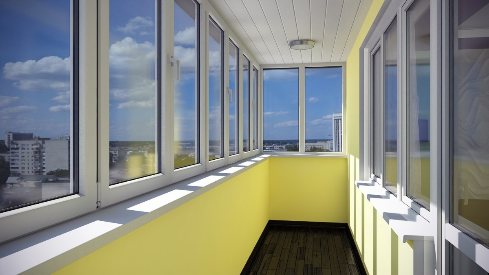

Металопластикові балкони покликані вражати своїм естетичним виглядом та освітленістю. Для цього при їх виробництві використовуються профільні системи мінімальної ширини. Це також хороший спосіб, щоб збільшити простір Вашого будинку.

Ціна. У порівнянні з дерев'яними та алюмінієвими профілями, металопластикові двері нижчі за вартістю, при цьому є нічим не гіршими за рядом звуко- та теплоізоляційних параметрів. Це той випадок, коли дорожче не завжди є краще.
Енергозбереження. Металопластикові двері все більше користуються своєю популярністю на ринку теплозберігаючих конструкцій, адже вони виготовляються з високоякісних матеріалів, і нічим не поступаються за цими параметрами і параметрами надійності своїм аналогам.
Шумоізоляція. Конструкції з металопластику утвердили себе як надійний спосіб зберегти свій будинок тихим та затишним. Вас не турбуватиме зовнішній шум і метушня. Купуючи пластикові двері Ви, в першу чергу, дбаєте про здоровий сон і комфорт!
Безпека. Представлені на сайті профілю дверей мають клас захисту RC2 і вище, що дозволить уникнути проникнення в будинок непроханих гостей. Зламати можна будь-який замок та конструкцію, але представлені у нас, швидше за все, відлякають потенційних злодіїв, оскільки злом таких систем неможливий без гучного звуку, і це довго.
Практичність. Ще однією перевагою пластикових дверей – це практичність. Вони прості у догляді, їх не потрібно фарбувати чи заклеювати на зиму. Досить промити поверхню мильним розчином, і змастити елементи фурнітури всього 2-3 рази на рік.
Сфера застосування. Є хибна думка, що пластикові двері використовуються лише у балконних конструкціях, але це не так. Вони успішно експлуатуються як вхідні та міжкімнатні двері, завдяки своїм чудовим тепло- та звукоізоляційним властивостям, надійністю, а також стійкістю до перепадів температури.
Недоліки
Сюди можна віднести неможливість фарбування в будь-який колір, невеликі габарити конструкцій, що значно звужує архітектурний захід і можливість інтепретації. Але у кожної речі свої завдання, а пластикові двері справляються з ними на всі 100% та повністю окуплять Ваше вкладення у них.